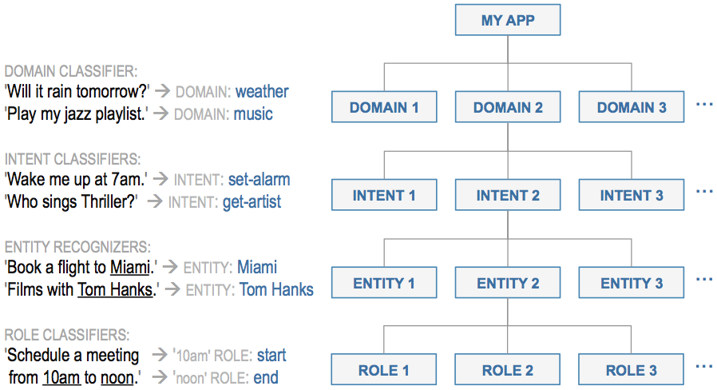
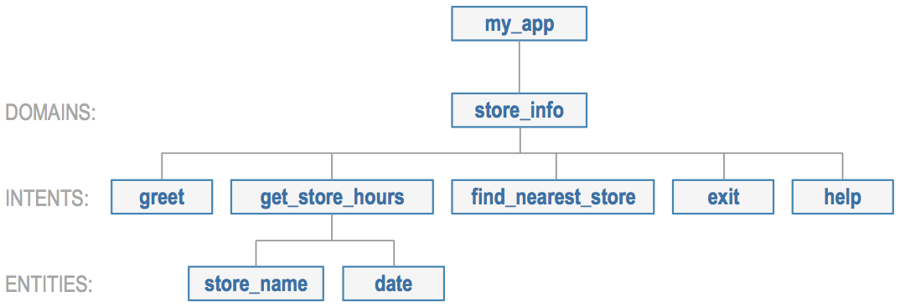
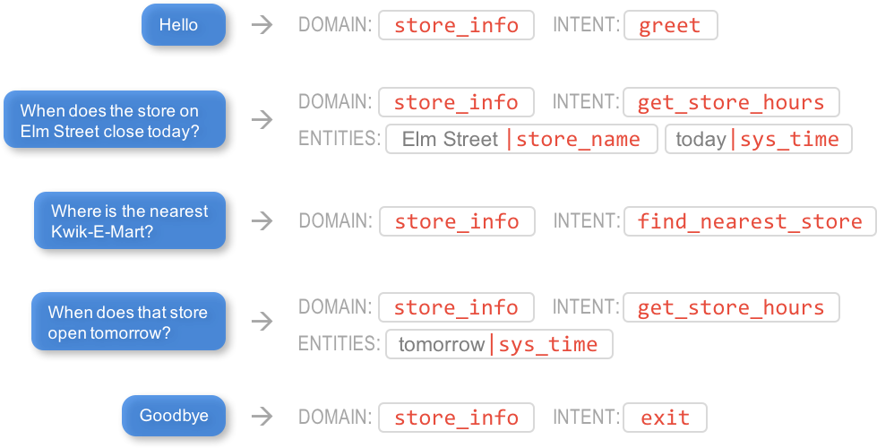

Step 3: Define the Domain, Intent, Entity, and Role Hierarchy
Title goes here
Title goes here
Title goes here
Title goes here
Title goes here
To model and understand natural language, every conversational application relies on a hierarchy of machine learning classifiers. This family of machine learning models, broadly defined as the Natural Language Processing (NLP) component of an application, sits at the core of all conversational assistants in widespread production use today. While there are many different ways that machine learning techniques can be enlisted to dissect and understand human language, a set of best practices has emerged in recent years to systematize the sometimes challenging task of building accurate and useful natural language processing systems. Today, nearly all commercial conversational applications rely on the hierarchy of machine learning models illustrated below.
{kind=link}
The topmost layer in the model hierarchy is the domain classifier. The domain classifier performs the first-pass categorization, assigning each incoming query into one of a set of pre-defined buckets or domains.
For any given domain, there may be one or more intents, like “order drink” or “cancel order,” which reflect what the user is trying to accomplish. You define the intents for your application by abstracting them from the dialogue states you scripted in Step 2. The intent classifiers predict which of the intents is expressed in a given request.
Next, the entity recognizers discern the words and phrases that must be identified to understand and fulfill the request. These identified words and phrases are called entities, and each intent may have zero or more types of entities which must be recognized.
A fourth and final classification step, called role classification, is required when entities of the same type need to be interpreted differently to understand the request. For example, “9 AM” and “5 PM” could both be classified as time entities, but one might need to be interpreted as playing the role of an opening time and the other as playing the role of a closing time. The role classifiers label such entities with the appropriate roles.
Step 7 and the User Guide provide more details on the NLP classifier hierarchy utilized by MindMeld Workbench.
The Example NLP Model Hierarchy¶
We could design the NLP model hierarchy for our simple Kwik-E-Mart conversational application to resemble the illustration below.
{kind=link}
The single domain in this rudimentary application, store_info, encompasses all of the functionality required to find information about Kwik-E-Mart retail stores. The store_info domain supports five initial intents:
greet— Begins an interaction and welcomes the userget_store_hours— Returns the opening and closing times for the specified storefind_nearest_store— Returns the closest store to the userexit— Ends the current interactionhelp— Provides help information in case the user gets stuck
Note
By convention, intent names are verbs that describe what the user is trying accomplish.
In this basic example, only the get_store_hours intent requires entity recognition. This intent supports two entity types:
store_name— The name of a specific retail store locationdate— The calendar date or day of the week
Neither of these entity types require role classification.
Note
By convention, entity names are nouns that describe the entity type.
Having completed the design of the domain, intent, entity and role hierarchy for our example application, we can begin implementing the application using MindMeld Workbench.
Begin Implementation with MindMeld Workbench¶
Note
Please install Workbench before proceeding with the instructions below.
Every Workbench application begins with a root folder to contain all of the application’s training data files, configuration files and custom code. For our example, let’s define a root folder called my_app.
export WB_APP_ROOT="$HOME/my_app"
mkdir -p $WB_APP_ROOT
cd $WB_APP_ROOT
The folder structure inside the root folder defines the domain and intent hierarchy for your application. Create it according to the following procedure:
- Within the root folder, create a folder named
domains- Use your domains as names for a set of folders that you create within the
domainsfolder- Create a set of folders within each folder you created in Step 2, giving each new folder the name of one intent from its parent domain
mkdir domains
cd domains
mkdir store_info
cd store_info
mkdir greet
mkdir get_store_hours
This folder structure organizes the training data for the machine learning models in your application. Now, create a folder structure to organize the data files used by the entity recognizer, role classifier, and entity resolver models.
- Within the root folder, create a folder named
entities- Use your entities as names for a set of folders that you create within the
entitiesfolder
cd $WB_APP_ROOT
mkdir entities
cd entities
mkdir store_name
Workbench provides a faster way to create your application structure for common use cases. These are called application blueprints. A blueprint is a pre-configured application structure. Starting with an empty root directory, you can set up your initial application structure using the blueprint() method, as shown below.
Warning
If you manually created a my_app folder following the instructions above, be sure to delete it before invoking the blueprint method.
cd $HOME
python -c "import mmworkbench as wb; wb.blueprint('kwik_e_mart', 'my_app');"
Running the blueprint() method for our simple example application produces the root directory structure illustrated below.
{kind=link}
See the User Guide for more about blueprints, and root folder organization and structure.
Notice that there is no folder for the date entity. None is needed, because we can use the Workbench system entity for time expressions, sys_time, to capture the date information. A system entity is one that it is already built into the Workbench platform. Workbench provides several different system entity types for common, domain-independent entities; see the Workbench User Guide for details.
Given the simple interaction proposed in the preceding section and hierarchy we have now defined, we would expect our trained natural language processing models to yield the results illustrated below.
{kind=link}
Next, we explore how to introduce training data to the defined folders in order to build machine learning models that parse and understand user requests as shown above.